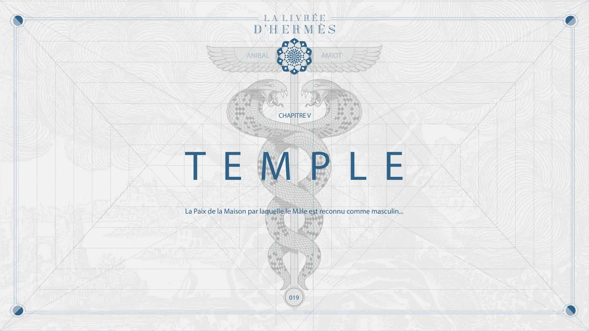
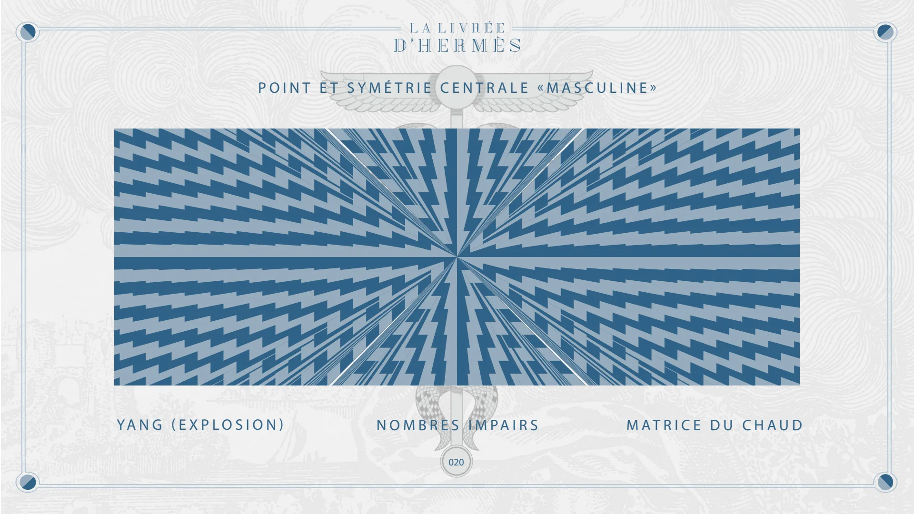
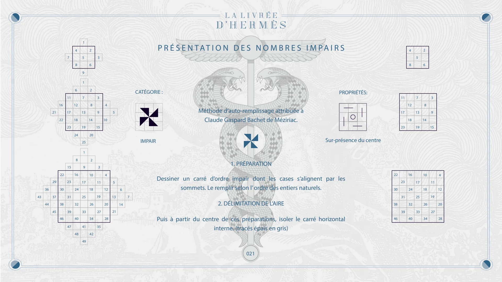
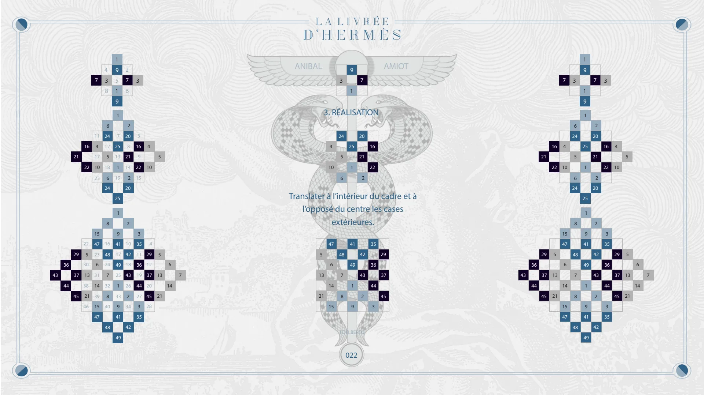
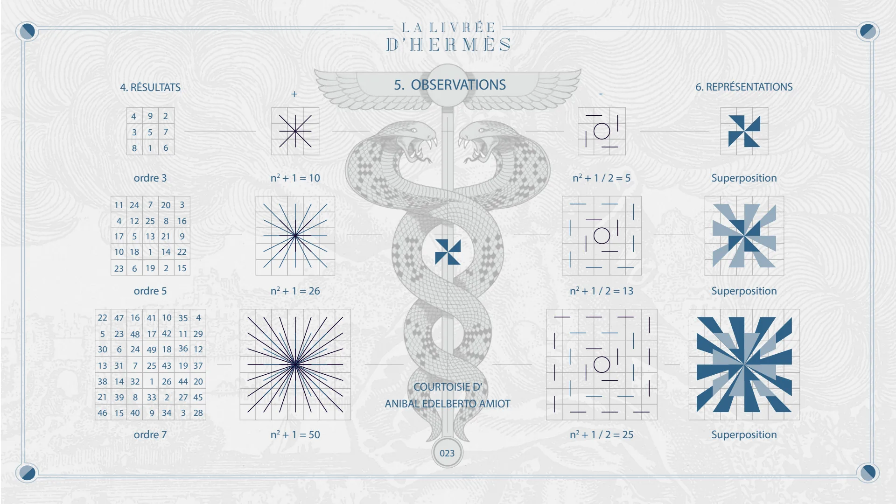
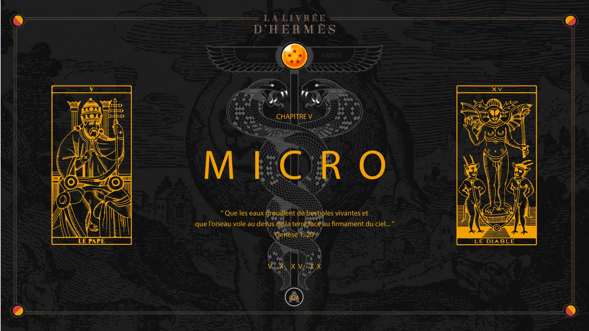
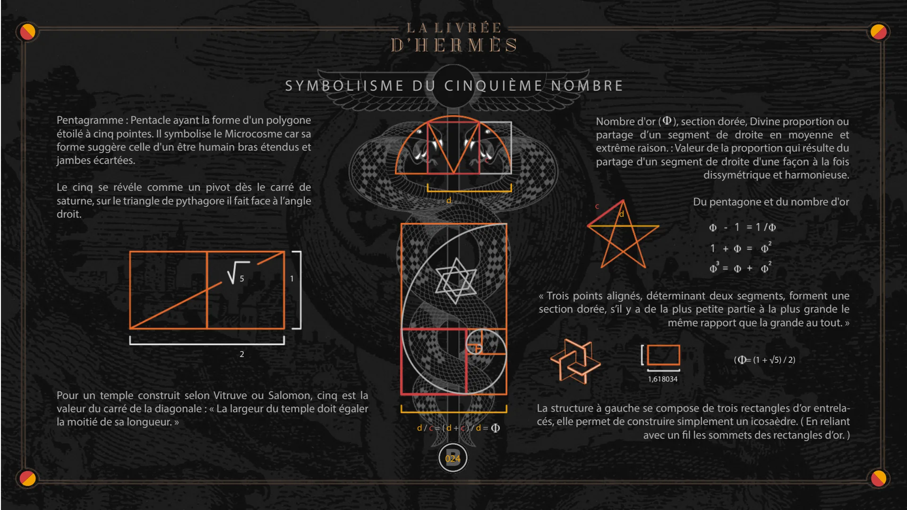
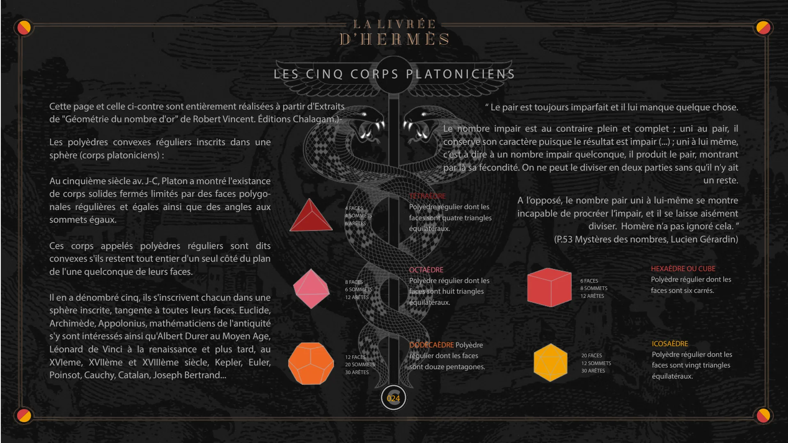

Chapitre V — Temple, Micro
Pages 019 à 024C du livre · chapitre 5 sur 7
Chapitre V de La Livrée d'Hermès : Temple et Micro. Les nombres impairs et la méthode d'auto-remplissage attribuée à Bachet de Méziriac, puis le cinquième nombre : pentagramme, nombre d'or et corps platoniciens.

CHAPITRE V
TEMPLE
ANIBAL
AMIOT
La Paix de la Maison par laquelle le Mâle est reconnu comme masculin...
019

POINT ET SYMÉTRIE CENTRALE «MASCULINE»
YANG (EXPLOSION)
NOMBRES IMPAIRS
020
MATRICE DU CHAUD

PRÉSENTATION DES NOMBRES IMPAIRS
21 16 22 7 11 17 23 4 8 6 12 18 24 1 5 9 1 7 13 19 25 2 6 2 8 14 20 3 3 9 15 4 10 5
CATÉGORIE :
IMPAIR
Méthode d’auto-remplissage attribuée à Claude Gaspard Bachet de Méziriac.
PROPRIÉTÉS:
Sur-présence du centre 11 17 23 4 8 12 18 5 7 13 19 2 6 8 14 3 9 15 43 36 29 37 22 30 15 23 31 8 16 24 1 9 17 25 2 10 18 3 11 19 4 12 5 13 6 7
1. PRÉPARATION
Dessiner un carré d’ordre impair dont les cases s‘alignent par les sommets. Le remplir selon l’ ordre des entiers naturels.
22 30 23 31 16 24 17 25 10 18 11 19 4 12 44 45 38 46 39 47 32 40 33 41 26 34 27 35 20 28 21 14
2. DÉLIMITATION DE L’AIRE
Puis à partir du centre de ces préparations, isoler le carré horizontal interne. (tracés épais en gris)
38 46 39 32 40 33 26 34 27 20 28 48 49 42 021

9 3 7 1
3. RÉALISATION
4 10 24 5 6 25 1 20 21 2 16 22 21 16 22 7 11 4 17 10 23 4 3 8 6 24 12 5 18 6 24 8 1 9 5 1 9 1 7 25 13 1 19 25 1 2 7 6 2 20 8 21 14 2 20 2 3 3 16 9 22 15 4 10 5
ANIBAL
AMIOT
Translater à l’intérieur du cadre et à l’opposé du centre les cases extérieures.
21 16 22 7 4 10 3 6 24 5 6 24 8 1 9 1 9 1 25 1 25 1 7 2 20 21 2 20 2 3 16 22 4 10 5 43 36 44 29 37 45 22 5 30 13 38 21 46 15 47 23 6 31 14 39 15 47 16 48 24 7 32 8 40 48 9 41 17 49 25 1 33 9 41 49 10 42 18 43 26 2 34 42 3 35 11 36 19 44 27 3 35 4 29 12 37 20 45 28 5 13 21 6 14 7 5 13 21 47 6 14 15 41 48 42 49 7 43 1 8 2 9
EDELBERTO
022 35 36 44 3 29 37 45 43 36 44 29 37 45 5 13 21 15 47 6 14 15 47 48 7 8 48 9 41 49 1 9 41 49 42 43 2 42 3 35 36 44 3 35 29 37 45 5 13 21 6 14 7

22 5 30 13 38 21 46
4. RÉSULTATS
4 3 8 9 5 1 2 7 6 ordre 3 11 4 17 24 12 5 10 18 6 23 7 25 13 1 19 20 8 21 14 2 47 23 6 31 14 39 15 ordre 5 16 48 24 7 32 8 40 41 17 49 25 1 33 9 10 42 18 43 26 2 34 ordre 7 3 16 9 22 15 35 11 36 19 44 27 3 4 29 12 37 20 45 28 +
n2 + 1 = 10
n2 + 1 = 26
n2 + 1 = 50
5. OBSERVATIONS
COURTOISIE D’ ANIBAL EDELBERTO AMIOT
023 -
n2 + 1 / 2 = 5
n2 + 1 / 2 = 13
n2 + 1 / 2 = 25
6. REPRÉSENTATIONS
Superposition Superposition Superposition

CHAPITRE V
MICRO
ANIBAL
AMIOT
“ Que les eaux grouillent de bestioles vivantes et que l’oiseau vole au desus de la terre face au firmament du ciel... ” Genèse 1, 20
V X XV XX
A 024

SYMBOLIISME DU CINQUIÈME NOMBRE
Pentagramme : Pentacle ayant la forme d'un polygone étoilé à cinq pointes. Il symbolise le Microcosme car sa forme suggère celle d'un être humain bras étendus et jambes écartées.
Le cinq se révéle comme un pivot dès le carré de saturne, sur le triangle de pythagore il fait face à l’angle droit.
5 1 d 2
Pour un temple construit selon Vitruve ou Salomon, cinq est la valeur du carré de la diagonale : « La largeur du temple doit égaler la moitié de sa longueur. »
d / c = ( d + c ) / d =
c
Nombre d'or ( ), section dorée, Divine proportion ou partage d’un segment de droite en moyenne et extrême raison. : Valeur de la proportion qui résulte du partage d'un segment de droite d'une façon à la fois dissymétrique et harmonieuse.
c d
Du pentagone et du nombre d'or
« Trois points alignés, déterminant deux segments, forment une section dorée, s’il y a de la plus petite partie à la plus grande le même rapport que la grande au tout. »
( = (1 + √5) / 2) 1,618034
La structure à gauche se compose de trois rectangles d’or entrelacés, elle permet de construire simplement un icosaèdre. ( En reliant avec un fil les sommets des rectangles d’or. )
B 024

LES CINQ CORPS PLATONICIENS
Cette page et celle ci-contre sont entièrement réalisées à partir d'Extraits de "Géométrie du nombre d'or" de Robert Vincent. Éditions Chalagam.)-
Les polyèdres convexes réguliers inscrits dans une sphère (corps platoniciens) :
Au cinquième siècle av. J-C, Platon a montré l'existance de corps solides fermés limités par des faces polygonales régulières et égales ainsi que des angles aux sommets égaux.
4 FACES 4 SOMMETS 6 ARÊTES
Ces corps appelés polyèdres réguliers sont dits convexes s'ils restent tout entier d'un seul côté du plan de l'une quelconque de leurs faces.
Il en a dénombré cinq, ils s'inscrivent chacun dans une sphère inscrite, tangente à toutes leurs faces. Euclide, Archimède, Appolonius, mathématiciens de l'antiquité s'y sont intéressés ainsi qu'Albert Durer au Moyen Age, Léonard de Vinci à la renaissance et plus tard, au XVIeme, XVIIème et XVIIIème siècle, Kepler, Euler, Poinsot, Cauchy, Catalan, Joseph Bertrand...
8 FACES 6 SOMMETS 12 ARÊTES
12 FACES 20 SOMMETS 30 ARÊTES
“ Le pair est toujours imparfait et il lui manque quelque chose. Le nombre impair est au contraire plein et complet ; uni au pair, il conserve son caractère puisque le résultat est impair (...) ; uni à lui même, c’est à dire à un nombre impair quelconque, il produit le pair, montrant par là sa fécondité. On ne peut le diviser en deux parties sans qu’il n’y ait un reste. A l’opposé, le nombre pair uni à lui-même se montre incapable de procréer l’impair, et il se laisse aisément diviser. Homère n’a pas ignoré cela. ” (P.53 Mystères des nombres, Lucien Gérardin)
TÉTRAÈDRE
Polyèdre régulier dont les faces sont quatre triangles équilatéraux.
OCTAÈDRE
Polyèdre régulier dont les faces sont huit triangles équilatéraux.
DODÉCAÈDRE Polyèdre régulier dont les faces sont douze pentagones.
6 FACES 8 SOMMETS 12 ARÊTES
HEXAÈDRE OU CUBE
Polyèdre régulier dont les faces sont six carrés.
20 FACES 12 SOMMETS 30 ARÊTES
ICOSAÈDRE
Polyèdre régulier dont les faces sont vingt triangles équilatéraux.
C 024
© Anibal Edelberto Amiot. CC BY-NC 4.0 — creativecommons.org/licenses/by-nc/4.0 · DOI 10.5281/zenodo.22722485